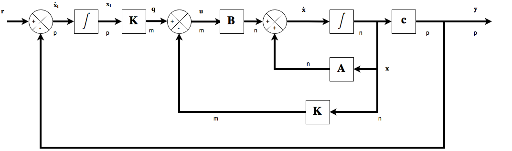
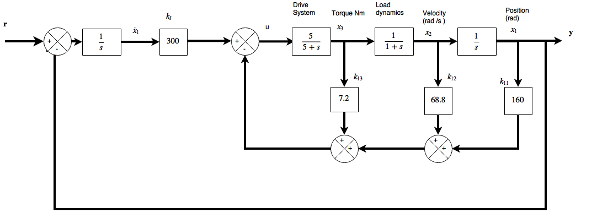
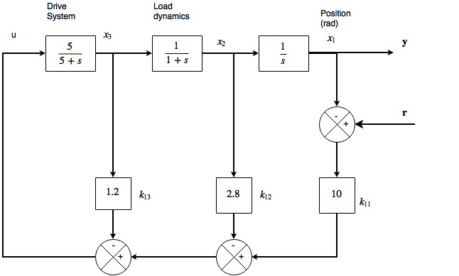

A system that is designed to follow a variable input reference signal (i.e. not regulating to zero) is called a tracking system (servo mechanism). If a tracking systems reference signal becomes steady
then it effectively becomes a regulator.
Tracking System Design using SVF
Closed loop regulators in general do not increase the system order. Dynamic compensators designed with frequency domain methods always increase the system order. A potential disadvantage to SVF design is that the order of the system may need to be increase to avoid steady state error. It is often neccessary to introduce integral control in order to remove s.s.e following a step input change. The approach in tracking system design is to form the output error and to add integral action to remove it. A block diagram for this arrangement is shown

The core of the system is an SVF regulator with its input at \(\mathbf q\) and its feedback gains at \(\mathbf K\). The extra components comprise a set of integrators equal in number to the number to the number of plant outputs \(\mathbf y\) and hence to the number of output reference setpoitns of \(\mathbf r\) . These integrators can have zero inputs (zero error between \(\mathbf r\) and \(\mathbf y\) ) while providing the non-zero signals at \(q\) which are neccessary to hold the regulator in the required non-zero state. For a system with \(p\) outputs, \(p\) new integrators will be added to the system and hence \(p\) new state variables called \(\mathbf x_I\), the integral states. The new \((m\times p)\) matrix \(\mathbf K_I\) is added to match the number of integral states to the mumber of open-loop plant inputs at \(u\). The new poles caused will need to be placed at desriable locations and the \(\mathbf K_I\) matrix will have tunable parameters so this can be achieved. The new poles may be placed significantly to the left in the s-plane compared to the existing ones to have as little effect as possible on the closed loop dynamics. If they are placed too far to the left then the system would need very large control signals.
The block diagram is analyzed to find the overall closed loop state-space model of any system arranged in this form, then the unknown parameters \(\mathbf K\ and \mathbf K_I\) are selected to give the overall closed-loop \(\mathbf A\) matrix the desired set of eigenvalues.
It is known that the SVF system at the heart of the tracking system can be described by the equation:
\(\displaystyle \mathbf{\dot x}=[\mathbf A-\mathbf{BK}]\mathbf x +\mathbf{Bq}\)
and from the diagram it can be seen that \(\mathbf q=\mathbf{K_I x_I} \) and \( \mathbf{\dot x}_1 = \mathbf r - \mathbf y = \mathbf r-\mathbf {Cx} \)...combining these gives:
\(\mathbf{\dot x}=[\mathbf A-\mathbf{BK}]\mathbf x+\mathbf{BK_I x_I}\)
and
\(\mathbf{\dot x}_1=-\mathbf{Cx}+\mathbf r\)
These yield the following overall closed loop state-space model where the overall state vector is the original state vector with the new integral states appended to it. We have the equation consisting of partitioned matrices:-
\( \displaystyle\left[
\begin{array} {ccc}
\displaystyle\mathbf{\dot x}\\
\displaystyle\mathbf{\dot x_I}
\end{array} \right]=\left[
\begin{array}{ccc|c}
\mathbf A-\mathbf {BK} & \mathbf{ B K_I}\\
-\mathbf C&0
\end{array}\right]\left[\begin{array}{ccc}\mathbf{x}\\ \mathbf{x_1}\end{array}\right]+\left[\begin{array}{ccc}\mathbf 0 \\ \mathbf 1\end{array}\right]\mathbf r \)
The eigenvalues of the system matrix
\( \displaystyle\mathbf A_c=\left[
\begin{array}{ccc|c}
\mathbf A-\mathbf {BK} & \mathbf{ B K_I}\\
-\mathbf C& \mathbf 0
\end{array}\right] \)
are those of the closed loop controlled plant and can be placed as desired so long as the system is controllable by choice of \(\mathbf K\) and \(\mathbf K_I\). The procedure is illustrated in the following example.
State Variable Feedback Tracking System for the Antenna Positioner
The antenna positioning system has only one input and one output. To arrange in the form of the typical SVF tracking system the SVF structure of the regulator system will be required. The system will use a unity feedback loop and a single integrator and a scalar gain \(k_I\), The modified diagram is shown below ...

\( \mathbf A_c=\left[
\begin{array}{ccc|c}
\mathbf A-\mathbf {bk} & \mathbf b k_I\\
-\mathbf c&0
\end{array}\right]=\left[
\begin{array}{ccc|c}
0&1&0&0\\
0&-1&1&0\\
-5k_{11}&-5k_{12}&-5-5k_{13}&5k_1\\
\hline\\
-1&0&0&0
\end{array}
\right] \)
and so the closed loop characteristic equation is \(|\lambda \mathbf I - \mathbf A_c | =0\) and this is easily obtained by expanding the resulting derminant by the last row ...
\(\lambda^4+(6+5k_{13})\lambda^3 + (5+5k_{12}+5k_{13})\lambda^2+5k_{11}\lambda + 5 k_I = 0 \)
and now the characteristic equation is compared with the desired CLCE using the same closed loop pole locations as before. The same equation as before can be reused with an extra integrator added. The new pole is place at an s-plane location \(\lambda=-30\).
\((\lambda+30)(\lambda^3+12\lambda^2+25\lambda + 50)=\lambda^4+42\lambda^3+385\lambda^2+800\lambda + 1500 = 0\)
Comparing coefficients gives ..
\(5k_I=1500\qquad so\ k_1=300\)
\(5k_{11}=800\qquad so\ k_{11}=160\)
\(6+5k_{13}=42\qquad so\ k_{13}=7.2\)
\(5+5k_{12}+5k_{13}=385\qquad so\ k_{12}=68.8\)
so that \(\mathbf K=\left[\begin{array}{cccc}160 & 68.8& 7.2\end{array}\right]\) and \(k_I=300\) leading to the diagram.
State Variable Feedback Tracking System Design by Gain Variation
It is possible to achieve the desired system output by pure gain variation of the regulator system, since the output settles to 10% of the input step, it could behave like a tracking system by adding a gain of 10 in series with the reference input. This would work in simulation however in practice could cause problems because it would place large signal variations on \(u\) and could lead to non-linear responses since the system would not be able to follow. The gain of 10 would be open loop so any error in setting the value or variation of its value during use would result in uncorrectable steady state errors at the output.
The same effect can be obtained by moving the gain inside the feedback loops and by divinding \(k_{11}\) by 10 giving a steady-state output of unity, however changing this value could affect the closed loop poles.
To maintain the poles the gains need to be maintained around each loop, so a gain of 10 would be added in series with \(u\) but inside the feedback summer, to compensate for the division by 10 in \(k_{11}\) and the system should be balanced with gains of 10 in appropriate places using block diagram manipulation. Adding a gain of 10 in the forward path and using the feedback vector \(\mathbf K=\left[\begin{array}{cccc}1&0.28&0.12\end{array}\right]\) gives the required responses but with the vertical scale multiplied by 10. The extra gains are inside the feedback loop and therefore have reduced sensitivity to error. This method will not be as reliable as the complete tracking system.
Tracking system design with inherent integration
This approach only works with systems that have pure integrators in their forward path in open-loop. It will work for any system whose output is a linear or angular position derived from a velocity signal, or any styem having linear actuators such as hydraulic cylinders which effectively integrate to give position.
It is sometimes possible in these systems to use the integral action to achieve zero steady state error to a step input instead of adding extra integrators. This method is suitable for the antenna positioning system
State Variable Feedback Tracker using inherent integral action
Since the integrator output of the antenna positioning system regulator must be zero (see last section), this implies \(x_2=x_3=u=0\). This suggests that the steady-state signal generated at \(u\) will be \(r-k_{11}x_1\) and with \(k_{11}=10\) and \(r=1\) this can be zero when \(x_1=0.1\) and this agress with the results of the final value theorem.
There is another way to achieve this while maintaining the feedback matrix K. The point of application of the reference input can be moved so that it becomes a reference for the states rather than the output.

The system arranged in this manner has reliable maintenance of zero steady state error, however making this type of system modification requires care, expertise, intuition, and possibly a lot of guts.
Ackermans method
Ackerman (1972) publuished an algorithmic approach to calculating a feedback matrix for an SVF scheme. The applies only to controllable systems and was originally made for Single Input Single Output SISO systems only. The method is based on the fact that it is easy to generate the required feedback matrix for a plant whose \(mathbf A\) matrix is in the controllable canonical companion form. Assuming the system is fully state controllable, a similarity transform is found which puts the plant into companion form , the required matrix is calculated, the inverse transform back to the original states is applied and this is all done ina simply procedure. Method
The required CLCE is created from the desired pole locations.
The required CLCE is re-written substituting the plant matrix \(\mathbf A\) for the laplace operator \(s\) (or \(\lambda\)).
The equation is multiplied out to reveal a matrix called \(\alpha \mathbf A\)
Form the controllability test matrix \(\mathscr C = \left[\begin{array}{ccc} \mathbf b& \mathbf{Ab}&\mathbf A^2\mathbf b & \cdots &\mathbf A^{n-1}\mathbf b\end{array}\right]\)
Calculate the required feedback gain vector \(\mathbf k = \left[\begin{array}{ccc} 0&0&0&\cdots&0&1\end{array} \right]\mathscr C^{-1} \alpha \mathbf A \)
State Variable Feedback Regulator using Ackermans method
The desired closed loop poles are to be at \(\lambda=-1\pm 2 j\) and \(\lambda = -10\). The required closed loop CLCE for the system is therefore
\(\lambda^3 + 12 \lambda ^2 + 25 \lambda + 50 = 0\)
The matrices for the state equations are:=
\(\mathbf A = \left[\begin{array}{ccc}0&1&0\\0&-1&1\\0&0&-5\end{array}\right] \qquad and \qquad \mathbf b = \left[\begin{array}{ccc}0\\0\\5\end{array}\right]\)
and so \(\alpha \mathbf A\) is
\(\alpha (\mathbf A )= \left[\begin{array}{ccc}0&1&0\\0&-1&1\\0&0&-5\end{array}\right]^3+12\left[\begin{array}{ccc}0&1&0\\0&-1&1\\0&0&-5\end{array}\right]^2+25\left[\begin{array}{ccc}0&1&0\\0&-1&1\\0&0&-5\end{array}\right]+50\mathbf I=\\
=\left[\begin{array}{ccc}50&14&6\\0&36&-16\\0&0&100\end{array}\right] \)
and
\(\mathscr C = \left[\begin{array}{ccc}\mathbf b&\mathbf {Ab}&\mathbf A^2 \mathbf b\end{array}\right] = \left[\begin{array}{ccc}0&0&5\\0&5&-30\\5&-25&125\end{array}\right]\)
feedback gains are given by
\(\mathbf k = \left[\begin{array}&0&0&1\end{array}\right]\mathscr C^{-1}\alpha (\mathbf A )= \left[\begin{array}&0&0&1\end{array}\right]\left[\begin{array}{ccc}0&0&5\\0&5&-30\\5&-25&125\end{array}\right]^{-1} \left[\begin{array}{ccc}50&14&6\\0&36&-16\\0&0&100\end{array}\right] \\ = \left[\begin{array}&10&2.8&1.2\end{array}\right]\)
And this is the same result as was obtained earlier.
Choice of locations for the closed loop poles
This can be a case of trial and error. Simulations on computer can show the driving inputs to the plant. A good method for doing this would be setting the \(D\) matrix elements to unity and connecting the inputs of intrest to the extra system outputs. the rows of the \(\mathbf C\) matrix corresponding to the new outputs would be set to zero. The input signals can then be inspected for unrealistic amplitudes or bad rates of change.
A normal approach is to appximate the desired output by that of a second order model. The response can therefore be specified in terms of damping ratio and frequency leading to second order transfer functions with deserired pole locations. This will only specify locations for dominant poles. To maintain the pole dominance, other poles must be less dominant. The most general rule is to move the open loop poles as little as possible. If the open loop location is acceptable then do not move it. Moving these poles requires higher gains in the feedback matrix and therefore energy.
Feedback gains increase as the controllability of a system decreases. A system that is only weakly controllable will require a lot more energy to control it. Weak controllability implies a pole close to a zero. In the root locus method zeros attract poles, so a lot of control effort is required to separate them.
If the right half poles are going to be moved then left half plane locations which are a direct reflection are a good starting point.
If the desired pole set contains fast poles (to the left in the s-plane) and some slow ones (close to imaginary axis) then the fast ones will require a lot of control input to make transients die away rapidly, the slow ones requiring much lower inputs will dominate the response.
The most efficient expenditure of control energy is when the closed loop poles are the same distance from the origin of the s-plane on a semi-circle. These could be in the configuration of the Butterworth filter. If the required radius is \(\omega_n\) since circles in the s-plane are contours of undamped natural frequency, then n-poles must be placed ...
\(\displaystyle \left(\frac{s}{\omega_n}\right)^{2n}=(-1)^{n+1}\)
where \(\omega_n\) is chosen to give a high enough response. The roots of this equation imply a set of poles on a semi-circle of radius \(\omega_m\) symetrically spaced about the negative real axis and with rightmost ones at angles of \(90/n\) degrees to the imaginary axis. This means that as the number of poles increases the rightmost pair will occur very close to the imaginary axis, so for stability it is wise to move them to the left in the s-plane. To set the closed-loop poles automatically, an Optimal control method should be used.
Multi Variable Systems
Systems that have several inputs and outputs do not require modifcations to the methods used in this section (however Ackermans method is only for SISO systems). The only difference is that when the characteristic equation of closed loop plant matrix \(\left[\mathbf A-\mathbf{BK}\right]\) is compared with the desired closed-loop characteristic equation , a set if homogeneous equations will be result. There will be more unknowns in the equations than (elements of \(\mathbf K\) than there are elements to solve them, resulting in an infinite number of solutions.
For a single input \(n^{th}\) order system there are \(n\) poles to be placed and \(n\) states to be fed back via \(\mathbf k\) to the single input. \(\mathbf k\) is therefore of size \(1\times n\) and has \(n\) unknown elements to be found from \(n\) simultaneous equations which result from comparison of the two \(n^{th}\) order CLCE's, so the solution is unique. If the system now has \(m\) inputs (so comparison of the CLCE's will still generate \(n\) simultaenous equations) \(\mathbf K\) must now feed back the \(n\) states to \(m\) inputs so must be of size \(m\times n\). there will be \(m\times n\) unknowns and only \(n\) equations. The ways to deal with the extra unknowns are:
1) Assign arbitrary values to elements of \(\mathbf K\) until only \(n\) unknowns remain. This can be useful if some elements of \(\mathbf K\) can be set to zero. If all the elements of one column can be set to zero then no connection is needed for that state variable. If the state cannot be measured then a state estimator may not be needed. If one row can be set to zero, then no connection is needed to the corresponding input.
2) the excess feedback gains can be used to control the directions of the closed loop eigenvectors as well as the positions of the closed loop eigenvalues. This gives even more possibilities for shaping the closed loop time response. There is complete freedom (if the system is controllable) in choosing closed loop pole locations (with regard to stability being realistic), however it is not possible to completely change the eigenvector directions here, since the eigenvectors are constrained to lie in a subspace of the state space. If a system has uncontrollable poles then tsometimes the associated eigenvector can be modified to minimize the contribution of the uncontrollable mode.
3) Rather than using pole-placement approach, an optimization procedure with flexibility to calculate feedback gains is possible.
Eigenvectors of the plant matrix
The eigenvectors are not characteristic values of the system model. They may change with a different set of state variables, even though the eigenvalues remain the same.
Eigenvectors of the Antenna positioning system
The original system matrix is
\(\mathbf A = \left[\begin{array}{ccc}0&1&0\\0&-1&1\\0&0&-5\end{array}\right]\)
and the eigenvalues are \(\lambda_1=0\), \(\lambda_2=-1\) and \(\lambda_3=-5\). From the full characteristic equation of the system \([\lambda\mathbf I-\mathbf A]\mathbf v = 0\)
\(
[\lambda \mathbf I-\mathbf A]\mathbf v=\left\{ \lambda\left[\begin{array}{ccc}1&0&0\\0&1&0\\0&0&1\end{array}\right]-\left[\begin{array}0&1&0\\0&-1&1\\0&0&-5\end{array}\right]\right\}\left[\begin{array}v_{11}\\v_{21}\\v_{31}\end{array}\right] \\
= \left[ \begin{array}{ccc} \lambda&-1&0\\0&\lambda+1&-1\\0&0&\lambda+5 \end{array}\right]\left[\begin{array}{ccc}v_{11}\\v_{21}\\v_{31}\end{array}\right] =\left[\begin{array}{ccc}0\\0\\0\end{array}\right]\)
Expanding these equations yeilds
\(\lambda v_{11}-v_{21}=0,\qquad (\lambda + 1)v_{21}-v_{31}=0,\qquad (\lambda +5)v_{31}=0 \)
Each eigenvalue is substituted separately into these equations to find the corresponding eigenvectors \(\mathbf v_1,\ \mathbf v_2,\ \mathbf v_3\). For \(\lambda_1=0\) the equations reveal that \({v_1}_{31}={v_1}_{21}=0\) while \({v_1}_{11}\) can have any value. The freedom of choice arises because a characteristic direction is being evaluated and not a magnitude. The scaling of the vector makes no difference to its direction. The eigenvector is usually normalized.
For \(\lambda_2 =-1\) the values show that \({v_2}_{31}=0\) and \({v_2}_{11}=-{v_2}_{21}\) and the value can be anything. In this example the value 1 is used.
For \(\lambda_3=-5\) the value of \({v_3}_{31}\) can be anything, \({v_3}_{21}=-0.25{v_3}_{31}\) and \({v_3}_{11}=-0.2{v_3}_{21}\). Again the first element is chosen as unity and the eignenvectors are
\(\mathbf v_1=\left[\begin{array}{ccc}1\\0\\0\end{array}\right],\qquad \mathbf v_2=\left[\begin{array}{ccc}1\\-1\\0\end{array}\right], \qquad \mathbf v_3=\left[\begin{array}1\\-5\\20\end{array}\right] \)
These eigenvectors are linearly independent as they specify independent directions in the state space. This will be true for any system having non-repeated eigenvalues.
Modes of Response
The modes of response are represented by the eigenvalues and eigenvectors of the system. The Laplace transform of the state equation is used to investigate modes of response
\(\mathbf X(s) = \mathbf \Phi(s)\mathbf X(s) + \mathbf \Phi (s)\mathbf{BU}(s)\)
and
\(\mathbf \Phi(s)=[s\mathbf I-\mathbf A]^{-1} \)
State Equation Solution for the Antenna positioning system
Firstly the transition matrix is evaluated ...
\(\mathbf \Phi (s) = [s\mathbf I-\mathbf A]^{-1}=\left \{ \left[ \begin{array}{ccc} s&0&0\\0&s&0\\0&0&s\end{array} \right]-\left[\begin{array}{ccc}0&1&0\\0&-1&1\\0&0&-5\end{array}\right]\right \}^{-1} \\
=\left[ \begin{array}{ccc} s&-1&0\\0&s+1&-1\\0&0&s+5\end{array} \right]^{-1} \)
using the adjoint matrix determinant to find the inverse ...
\(
\mathbf \Phi(s) = \displaystyle \frac{1}{s(s+1)(s+5)}\left[\begin{array}{ccc} (s+1)(s+5) & 0 &0 \\(s+5)&s(s+5)&0\\1&s&s(s+1) \end{array}\right]^T \\
= \displaystyle\left[ \begin{array}{ccc}\frac{1}{s} &\frac{1}{s(s+1)} &\frac{1}{s(s+1)(s+5)}\\0&\frac{1}{(s+1)}&\frac{1}{(s+1)(s+5)}\\0&0&\frac{1}{(s+5)}\end{array}\right]
\)
taking the inverse Laplace transform
\(\mathbf \Phi(t)=\left[\begin{array} {ccc}1&1-e^{-t}&\frac{1}{5}-\frac{1}{4}e^{-t}+\frac{1}{20}e^{-5t} \\ 0 & e^{-t}&\frac{1}{4}e^{-t}-\frac{1}{4}e^{-5t}\\ 0&0&e^{-5t}\end{array}\right]\)
This gives us the responses to the inputs via the usual method
\(\left[\begin{array}{ccc}x_1\\x_2\\x_3\end{array}\right]=\left[\begin{array} {ccc}{x_0}_1+(1-e^{-t}){x_0}_2+\left(\frac{1}{5}-\frac{1}{4}e^{-t}+\frac{1}{20}e^{-5t}\right){x_0}_3 \\ e^{-t}{x_0}_{2}+\left(\frac{1}{4}e^{-t}-\frac{1}{4}e^{-5t}\right){x_0}_{3} \\ e^{-5t}{x_0}_{3}\end{array}\right]\)
The eigenvalues give the exponential modes of the system. These appear in the responses of every state variable in general, as the term that multiplies t in the exponent of the exponentials. The eigenvectors specify the distribution of the modes between the states. The eigenvector corresponding with the eigenvalue -5 was \([\begin{array}{ccc}1&-5&20\end{array}]^T\). This predicts that the mode \(e^{-5t}\) will be found 20 times as much in evidence in the \(x_3\) response because 20 multiplies in the third row. This is verified in the time solution of \(x_3\). The other eigenvectors successfully predict the distribution in the same way.
The eigenvectors therefore show the proportion of each mode appearing in each state response, the proportions remain fixed whatever the excitation but the actual numbers may vary with the initial conditions.
Quicker method
This type of response can be obtained directly from the eigenvalues and eigenvectors of the system, removing the need for the inverse Laplace transform. For systems with distinct (non-repeated) eigenvalues, the procedure is as follows
1) from the plant matrix \(\mathbf A\) obtain the eigenvalues \(\lambda_1,\ \lambda_2,\ \lambda_3,...\)
2) calculate the corresponding eigenvectors
3) form the modal matrix \(\mathbf W\) for the system. This is the matrix whose columns are made up of the eigenvectors so \(\mathbf W=\left[\begin{array}{c|c|c|c|c}\mathbf v_1&\mathbf v_2&\mathbf v_3&\cdots&\mathbf v_n\end{array}\right]\)
4) determine the inverse of the modal matrix \(\mathbf W^{-1}\)
\(\mathbf W^{-1}=\left[\begin{array}{ccc}\mathbf w_1 \\ \hline \\ \mathbf w_2 \\ \hline \\ \mathbf w_3 \\ \hline \\ \vdots \\ \mathbf w_n \end{array}\right]\)
5) the state response to an intial condition vector \(\mathbf x (0)\) is then given by the following alternative representation of the transition matrix
\(\mathbf x(t)=\mathbf W diag\left[\begin{array}{ccc}e^{\lambda_1t} &e^{\lambda_2 t}&\cdots &e^{\lambda_n t}\end{array}\right]\mathbf W^{-1}\mathbf x(0) \\
= \displaystyle \left (\sum_{i=1}^{n}(e^{\lambda_i t}\mathbf v_i \mathbf w_i)\right)\mathbf x(0) \)
Direct method for the antenna positioner
The eigenvectors are
\(\mathbf v_1=\left[\begin{array}{ccc}1\\0\\0\end{array}\right],\qquad \mathbf v_2=\left[\begin{array}{ccc}1\\-1\\0\end{array}\right],\qquad \mathbf v_3=\left[\begin{array}{ccc}1\\-5\\20\end{array}\right]\)
the modal matrix is
\(\mathbf W = \left[\begin{array}{ccc}1&1&1\\0&-1&-5\\0&0&20\end{array}\right]\)
The inverse
\(\mathbf W^{-1} = \left[\begin{array}{ccc} 1&1&\frac{1}{5}\\0&-1&-\frac{1}{4}\\0&0&\frac{1}{20} \end{array}\right]\)
the rows are
\(\mathbf w_1=\left[\begin{array}{ccc}1&1&\frac{1}{5}\end{array}\right],\qquad \mathbf w_2=\left[\begin{array}{ccc}0&-1&-\frac{1}{4}\end{array}\right],\qquad \mathbf w_3=\left[\begin{array}{ccc}0&0&\frac{1}{20}\end{array}\right]\)
direct application of the quick method gives
\(\mathbf x(t)= \displaystyle \left (\sum_{i=1}^{n}(e^{\lambda_i t}\mathbf v_i \mathbf w_i)\right)\mathbf x(0) = \left \{ e^{0t} \left[\begin{array}{ccc}1\\0\\0\end{array}\right]\left[\begin{array}{ccc}1&1&\frac{1}{5}\end{array}\right] + e^{-1t} \left[\begin{array}{ccc}1\\-1\\0\end{array}\right]\left[\begin{array} {ccc} 0&-1&-\frac{1}{4} \end{array}\right] + e^{-5t} \left[\begin{array}{ccc}1\\-5\\20\end{array}\right]\left[\begin{array} {ccc} 0&0&\frac{1}{20} \end{array}\right] \right \}\mathbf x(0) \)